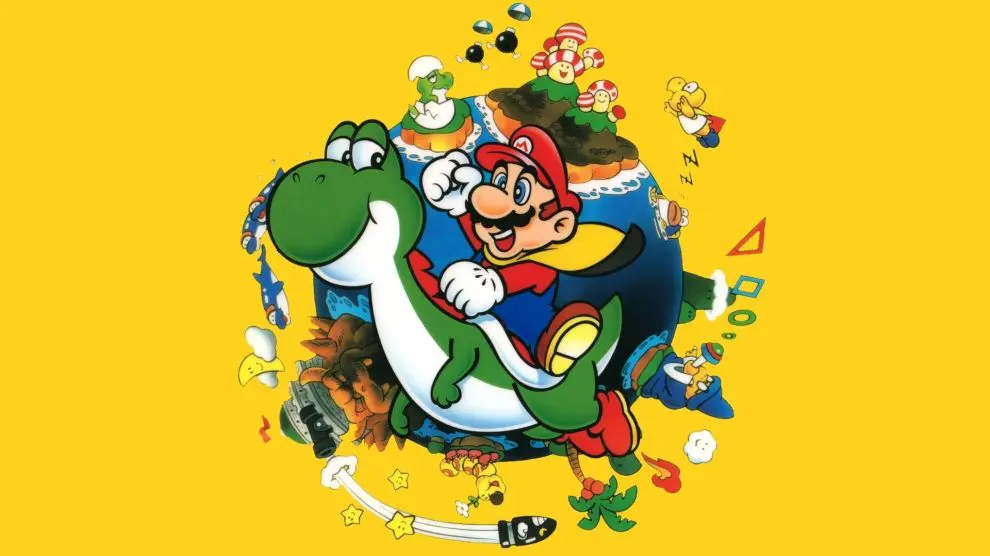

Características
Mario é retratado como um encanador corpulento que vive na terra fictícia do Reino do Cogumelo com Luigi, seu irmão mais novo e mais alto. Na série de televisão e no filme, Mario e Luigi são originalmente de Brooklyn, Nova York. Pouco se sabe sobre a infância de Mario, embora a versão infantil de Mario, Baby Mario, tenha aparecido pela primeira vez em 1995 em Super Mario World 2: Yoshi's Island, e tenha aparecido frequentemente em jogos de esportes da Nintendo desde então. Baby Mario tem um papel importante junto com Baby Luigi em Mario & Luigi: Partners in Time e aparece em Yoshi's Island DS. Ele, junto com o adulto Mario, é dublado por Charles Martinet. Ele veste uma camisa vermelha de mangas compridas, um macacão azul com botões amarelos, sapatos marrons, luvas brancas e um boné vermelho com um "M" vermelho impresso em um círculo branco. Em Donkey Kong, ele usava um macacão vermelho e uma camisa azul. Em Super Mario Bros., ele vestiu uma camisa marrom com macacão vermelho. Ele tem olhos azuis e, como Luigi, tem cabelos castanhos e bigode castanho-escuro ou preto. Essa diferença consistente de cor é atribuída a ser uma relíquia do design dos personagens para suas plataformas originais, em que certas características foram ativamente distinguidas enquanto outras tiveram que ser reduzidas devido a limitações técnicas.Em uma entrevista de 2005, Miyamoto afirmou que a idade física de Mario era de cerca de 24-25 anos.
